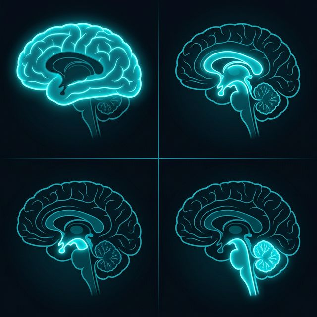

Serebrum
Prosensefalon
Mezensetalon
Rombensefalon
Beyin Detayı (Neden 4 Bölüm?)
Beyin yapısı, embriyolojik gelişimde nöral tüpün farklı hızlarda genişlemesiyle şekillenir. Bu bölümler sadece fiziksel değil, evrimsel işlem kapasitesi açısından da ayrışır.
1. Serebrum (Büyük Beyin)
En üst bilişsel katman. Hafıza, dil, istemli hareket ve duyusal entegrasyonu yönetir.
2. Ön Beyin (Prosensefalon)
Talamus (duyusal kapı) ve Hipotalamus (otonom denge) gibi kritik anahtarlama merkezlerini içerir.
3. Orta Beyin (Mezensetalon)
Görme/işitme refleksleri ve motor yolların geçiş noktasıdır. Hızlı tepki merkezidir.
4. Arka Beyin (Rombensefalon)
Beyincik (denge/koordinasyon) ile hayati hayatta kalma merkezlerini (Pons/Bulbus) barındırır.

Gri Madde (Processing)
Beyaz Madde (Transmission)
Hücresel Mimari: Gri vs Beyaz Cevher
Gri Madde: Hücre Gövdeleri (İşlem)
Beyaz Madde: Aksonlar (İletişim)
İletim ve Refleks Hattı
Dorsal Kökler: Duyusal giriş (Afferent).
Ventral Kökler: Motor çıkış (Efferent). Beyinle olan fiziksel arayüzdür.